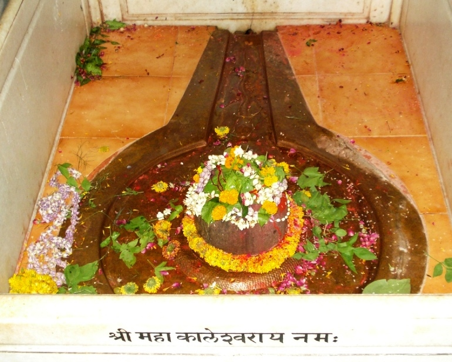

<?xml version="1.0" encoding="UTF-8"?><rss version="2.0"
	xmlns:content="http://purl.org/rss/1.0/modules/content/"
	xmlns:wfw="http://wellformedweb.org/CommentAPI/"
	xmlns:dc="http://purl.org/dc/elements/1.1/"
	xmlns:atom="http://www.w3.org/2005/Atom"
	xmlns:sy="http://purl.org/rss/1.0/modules/syndication/"
	xmlns:slash="http://purl.org/rss/1.0/modules/slash/"
	>

<channel>
	<title>Mahakaleshwar &#8211; Varanasi Temples</title>
	<atom:link href="index.html" rel="self" type="application/rss+xml" />
	<link>../../../../../index.html</link>
	<description>Temples of Varanasi as referred to in Kashi Khand</description>
	<lastBuildDate>Thu, 19 Jun 2025 05:16:46 +0000</lastBuildDate>
	<language>en-US</language>
	<sy:updatePeriod>hourly</sy:updatePeriod>
	<sy:updateFrequency>1</sy:updateFrequency>
	<generator>https://wordpress.org/?v=4.6.29</generator>
	<item>
		<title>MAHAKALESHWAR</title>
		<link>../../../../../shiva-temples/mahakaleshwar/index.html</link>
		<pubDate>Mon, 10 May 2010 15:45:45 +0000</pubDate>
		<dc:creator><![CDATA[admin]]></dc:creator>
				<category><![CDATA[Mahakaleshwar]]></category>
		<category><![CDATA[Other Shiva Temples (L-R)]]></category>
		<category><![CDATA[Shiva Temples]]></category>
		<category><![CDATA[jyotirling]]></category>
		<category><![CDATA[mahakaleshwar]]></category>
		<category><![CDATA[mahakaleshwar mean]]></category>
		<category><![CDATA[ujjain]]></category>
		<category><![CDATA[ujjain mahakaleshwar]]></category>

		<guid isPermaLink="false">../../../../../p=440.html</guid>
		<description><![CDATA[On a question raised by Goddess Parvaty, Lord Shiva was describing the various sacred Teerths (Ponds), Koops (Wells) and places of worship in Kashi.  Lord Shiva described such places with pleasure. (MAHAKALESHWAR) Towards the east of Daksheshwar Ling is the Mahakaleshwar Ling. By worshipping this Ling, the devotee  gets the benefits of worshipping the entire [&#8230;]]]></description>
				<content:encoded><![CDATA[<p>On a question raised by Goddess Parvaty, Lord Shiva was describing the various sacred Teerths (Ponds), Koops (Wells) and places of worship in Kashi.  Lord Shiva described such places with pleasure.</p>
<p></p>
<p style="text-align: center;"><strong>(MAHAKALESHWAR)</strong></p>
<p>Towards the east of Daksheshwar Ling is the Mahakaleshwar Ling. By worshipping this Ling, the devotee  gets the benefits of worshipping the entire world. (Kashi Khand, Chapter 97). Here, it may mean that of all the deities spread over the world. Mahakaleshwar is capable of saving devotees from untimely death.</p>
<p>While Mahakaleshwar Jyotirling is in Ujjain, people worship this temple in Kashi (as Jyotirling of the same name) as it is stated to be equivalent in strength.</p>
<p>&nbsp;</p>
<p><strong>Please watch our YouTube Video about Mahakaleshwar at following Link</strong></p>
<p>&nbsp;</p>
<p><a href="https://www.youtube.com/watch?v=1OSYpqeUaVI&amp;t=9s">https://www.youtube.com/watch?v=1OSYpqeUaVI&amp;t=9s</a></p>
<p>&nbsp;</p>
<p><strong>LOCATION OF MAHAKALESHWAR</strong></p>
<p>Mahakaleshwar is located at K-52/39, Mrityunjay Mahadev temple.  People can approach this temple by rickshaw through Bisheshwarganj/GPO.</p>
<p><strong>LOCATION OF MRITYUNJAY MAHADEV TEMPLE AS PER GOOGLE MAPS IS GIVEN BELOW</strong></p>
<p><a href="https://www.google.com/maps/place/Mahamrityunjay+Mahadev+Temple/@25.3222648,83.014546,20z/data=!4m12!1m6!3m5!1s0x398e2e3d7dd1fb31:0x15ea53adbe61e75a!2sAnjaneya+Temple!8m2!3d25.3221965!4d83.0148166!3m4!1s0x398e2e3d59280bad:0x5b8de15c093375b2!8m2!3d25.3221891!4d83.0147241">https://www.google.com/maps/place/Mahamrityunjay+Mahadev+Temple/@25.3222648,83.014546,20z/data=!4m12!1m6!3m5!1s0x398e2e3d7dd1fb31:0x15ea53adbe61e75a!2sAnjaneya+Temple!8m2!3d25.3221965!4d83.0148166!3m4!1s0x398e2e3d59280bad:0x5b8de15c093375b2!8m2!3d25.3221891!4d83.0147241</a></p>
<p>&nbsp;</p>
<p>&nbsp;</p>
<p><strong><span style="text-decoration: underline;">TYPES OF POOJA</span></strong></p>
<p>The temple is open from 04.00 a.m. to 12.00 midnight for worship.  People can perform pooja as per their convenience with sacred Ganges water and flowers etc.</p>
<p>&nbsp;</p>
]]></content:encoded>
			</item>
	</channel>
</rss>
